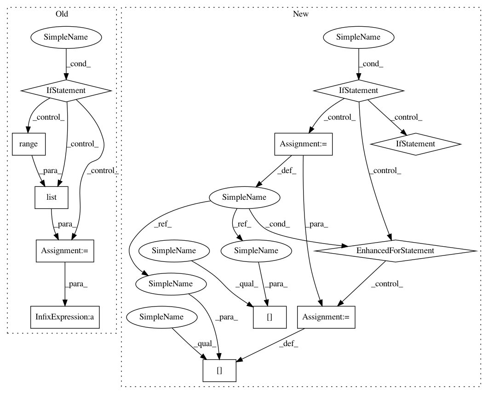

32d73ccb0d80db3727775fb9928f5f151ddaaab5,nt/speech_enhancement/mask_estimation.py,,simple_ideal_soft_mask,#,44
Before Change
X = input[0]
// Permute if nessesary
if feature_dim != -2 or source_dim != -1:
r = list(range(np.ndim(X)))
r[feature_dim], r[-2] = r[-2], r[feature_dim]
r[source_dim], r[-1] = r[-1], r[source_dim]
X = np.transpose(X, axes=r)
power = np.einsum("...dk,...dk->...k", X.conjugate(), X)
mask = (power / np.sum(power, axis=power.ndim-1, keepdims=True)).real
return mask
After Change
//power = np.einsum("...dk,...dk->...k", X.conjugate(), X)
mask = (power / np.sum(power, axis=source_dim, keepdims=True)).real
if not tuple_output:
return np.squeeze(mask, axis=feature_dim)
else:
sizes = np.cumsum([o.shape[source_dim] for o in input])
output = np.split(mask, sizes[:-1], axis=source_dim)
for i in range(len(output)):
if output[i].shape[source_dim] is 1:
output[i] = np.squeeze(output[i])
// ToDo: Determine, why the commented code is not working
// output[i] = np.squeeze(output[i], axis=(source_dim,feature_dim))
else:
output[i] = np.squeeze(output[i], axis=feature_dim)
return output
def quantile_mask(observations, quantile_fraction=0.98, quantile_weight=0.999):
Calculate softened mask according to lorenz function criterion.
:param observation: STFT of the the observed signal
In pattern: SUPERPATTERN
Frequency: 3
Non-data size: 12
Instances
Project Name: fgnt/pb_bss
Commit Name: 32d73ccb0d80db3727775fb9928f5f151ddaaab5
Time: 2015-10-06
Author: cbj@mail.uni-paderborn.de
File Name: nt/speech_enhancement/mask_estimation.py
Class Name:
Method Name: simple_ideal_soft_mask
Project Name: fgnt/pb_bss
Commit Name: 32d73ccb0d80db3727775fb9928f5f151ddaaab5
Time: 2015-10-06
Author: cbj@mail.uni-paderborn.de
File Name: nt/speech_enhancement/mask_estimation.py
Class Name:
Method Name: simple_ideal_soft_mask
Project Name: analysiscenter/batchflow
Commit Name: 49f4e83ae4323e032bdd232e466e59b4aeceb458
Time: 2018-03-28
Author: g.ivanov@analysiscenter.ru
File Name: dataset/batch_image.py
Class Name: ImagesBatch
Method Name: _invert_
Project Name: analysiscenter/batchflow
Commit Name: d381fb0787395076ecb8a3bd6984f52a16793fae
Time: 2018-03-27
Author: g.ivanov@analysiscenter.ru
File Name: dataset/batch_image.py
Class Name: ImagesBatch
Method Name: _invert_